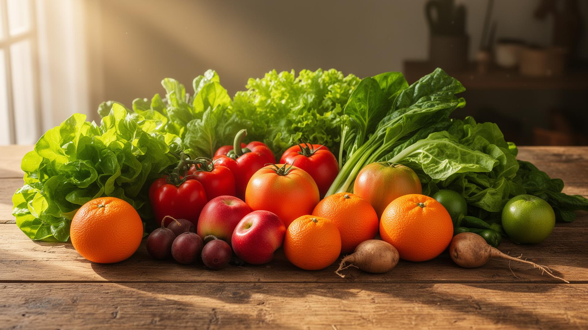
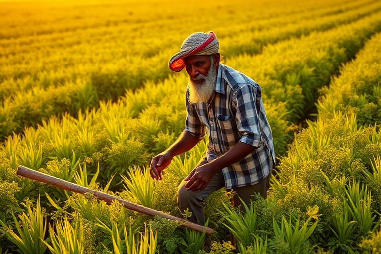
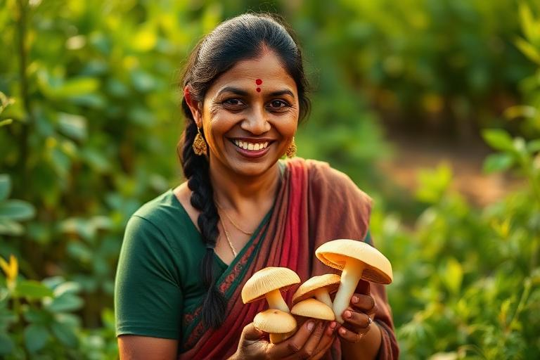
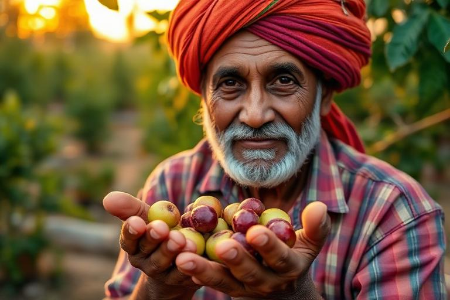
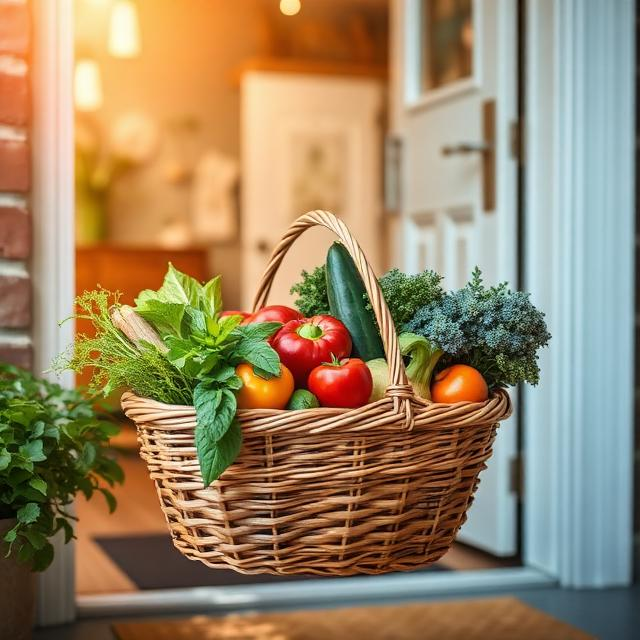

KissanCity brings you handcrafted pickles, chutneys & murabbas — made from farm-fresh organic ingredients, delivered to your doorstep.
Every jar is packed with natural health benefits — no preservatives, no chemicals, just pure farm-fresh goodness backed by Ayurvedic tradition.
We cut the middlemen so you get the freshest produce at fair prices.
Local farmers grow and harvest fresh organic produce using traditional, chemical-free methods.
Every product is verified for organic certification and freshness before being listed.
Orders are packed and shipped directly from the farm to your doorstep within 24–48 hours.
Rooted in Ayurveda and backed by modern nutrition — every KissanCity product is crafted for both taste and therapeutic value.
Mushrooms are rich in beta-glucans and selenium that strengthen your immune system naturally.
Garlic contains allicin which helps lower cholesterol, blood pressure and reduces heart disease risk.
Amla has 20x more Vitamin C than oranges — improving skin health, eyesight and slowing aging.
Mushrooms contain lion's mane compounds that support cognitive function and memory retention.
Traditional spices like turmeric, mustard & fenugreek in our pickles fight chronic inflammation.
Naturally fermented pickles and amla aid digestion, improve gut flora and nutrient absorption.
Meet the passionate farmers who grow, harvest, and handcraft every product with love and generations of wisdom.

"I believe in growing food the way nature intended — no chemicals, no shortcuts. Every mushroom we harvest carries the richness of our soil."

"My grandmother taught me which mushrooms grow best in the hills. Today, I share that knowledge with KissanCity to bring purity to every jar."

"ਸਾਡੇ ਆਂਵਲੇ ਦੇ ਰੁੱਖ 40 ਸਾਲ ਪੁਰਾਣੇ ਨੇ। ਇਨ੍ਹਾਂ ਦਾ ਸੁਆਦ ਤੇ Vitamin C ਕਿਸੇ ਹੋਰ ਵਿੱਚ ਨਹੀਂ ਮਿਲਦਾ। ਅਸੀਂ ਹਰ ਦਾਣਾ ਹੱਥ ਨਾਲ ਤੋੜਦੇ ਹਾਂ।"
"म्हारी ज़मीन तै जो उगै सै, वो असली सै। ना कोई केमिकल, ना कोई मिलावट। KissanCity नै म्हारे किसानां की मेहनत की सही कीमत दी सै। अब म्हारा परिवार खुशहाल सै।"
Every purchase directly supports small-scale organic farmers across India. We ensure fair prices, no middlemen, and sustainable farming practices that protect both the farmer and the earth.
50+
Farmer Families
100%
Organic
0
Middlemen
We believe everyone deserves access to pure, organic food. KissanCity bridges the gap between hardworking Indian farmers and health-conscious families.
No chemicals, no artificial flavours — made with traditional recipes and farm-fresh ingredients.
Each product is crafted with ingredients known for immunity, digestion & anti-inflammatory properties.
Every purchase directly supports rural farming communities and traditional food artisans.
Our mushrooms are rich in beta-glucans, Vitamin D & antioxidants — nature's superfood.
Certified Organic
Verified farm sources
Get a curated selection of our finest mushroom pickles, murabbas & chutneys — perfect as gifts or for your own pantry.
